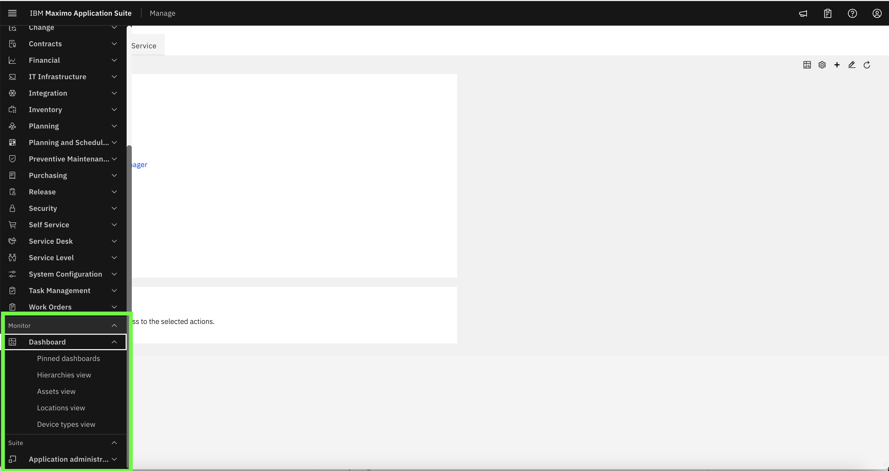
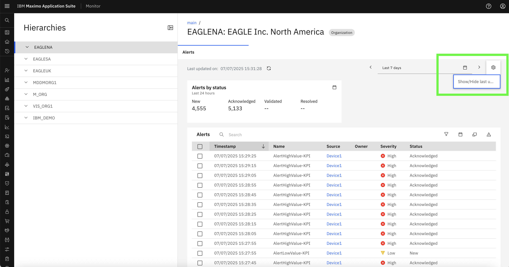
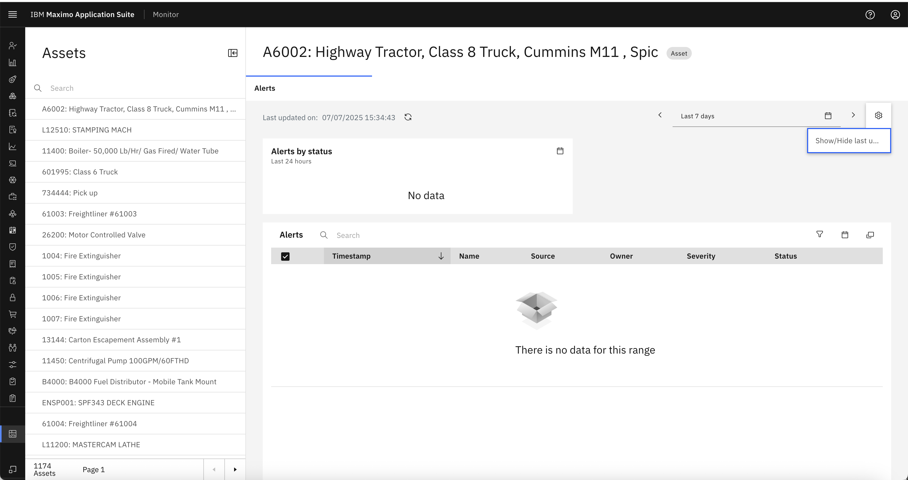
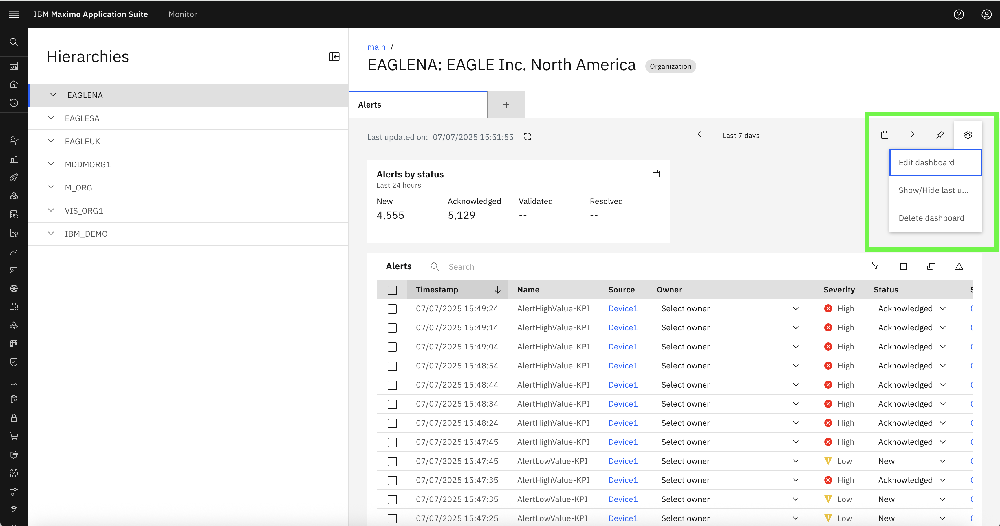
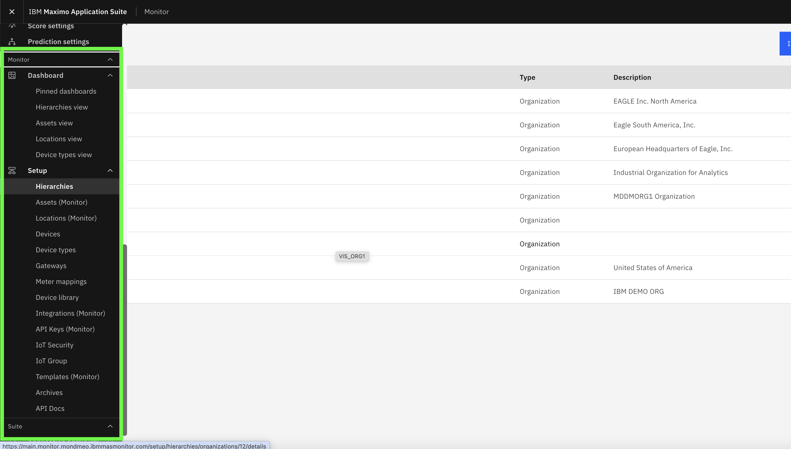
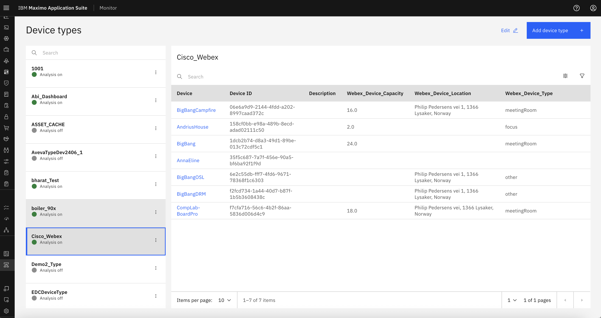
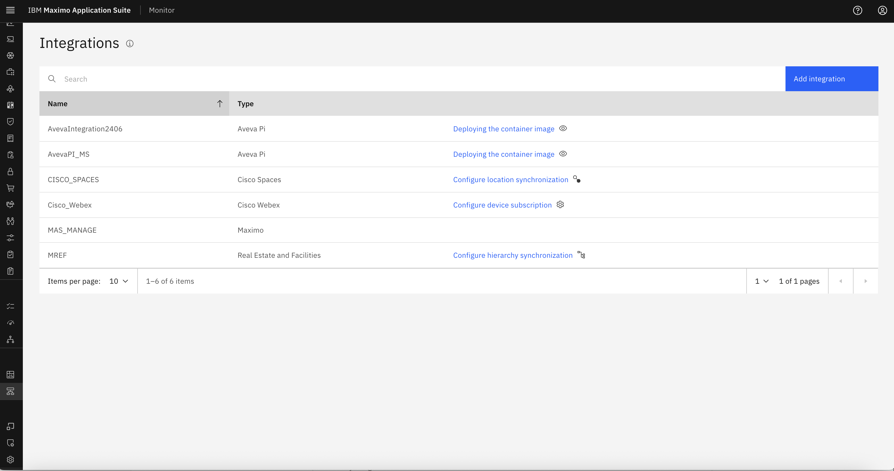

Objectives
In this exercise, you will learn how to:
- Login as users with different roles
- Observe and compare UI behavior based on assigned Security Groups
- Understand how RBAC enforces access control in Monitor
Before you begin:
This exercise assumes that you have:
- Completed Creating Security Groups
- Completed Creating Users and Assigning Groups
RBAC controls how a user experiences the Monitor application. Based on their assigned Security Groups, users will see a different UI, and different levels of functionality will be enabled.
Scenario 1: Readonly User Access
User Info:
- Username: readonly_user
- Groups: MONITOR_READ_ONLY, MAXADMIN
Expected Behavior: - Can view the Dashboard pages - Cannot create, edit, or delete entries - Setup pages like Security, Device Types, etc. are not visible

Info
Notice that CRUD buttons (like Add/Edit/Delete) are not available, and Setup is hidden from the left menu.
- The User Can Only View The Dashboard and cannot make any changes:
 
Scenario 2: Normal User Access
User Info:
- Username: normal_user
- Groups: MONITOR_USERS, MAXADMIN
Expected Behavior: - Can access Dashboard pages - Can perform CRUD operations on dashboards - Cannot access Setup pages
Tip
This role is ideal for operational users who manage dashboard data but should not modify system configurations.
- The user can access as well as Edit Dashboard 
Scenario 3: Admin User Access
User Info:
- Username: admin_user
- Groups: MONITOR_ADMIN, MAXADMIN
Expected Behavior: - Full access to Dashboard and Setup - Can create/edit/delete dashboards and setup pages.

Note
Admins see all modules and can manage both users and system-level configurations.
-
The User can perfrom CRUD operations on the Dashboard :
-
The User can access all the setup pages like Device Types, Integrations etc : 
-
Integrations: 
Summary Comparison of out of the Box security groups.
| Role | Dashboard Access | CRUD Operations | Setup Access | Assigned Groups |
|---|---|---|---|---|
| Readonly User | ✅ View only | ❌ No | ❌ No | MONITOR_READ_ONLY, MAXADMIN |
| Normal User | ✅ Full access | ✅ Yes | ❌ No | MONITOR_USERS, MAXADMIN |
| Admin User | ✅ Full access | ✅ Yes | ✅ Full | MONITOR_ADMIN, MAXADMIN |
Congratulations!
You have successfully verified how user access behavior changes based on assigned RBAC roles.